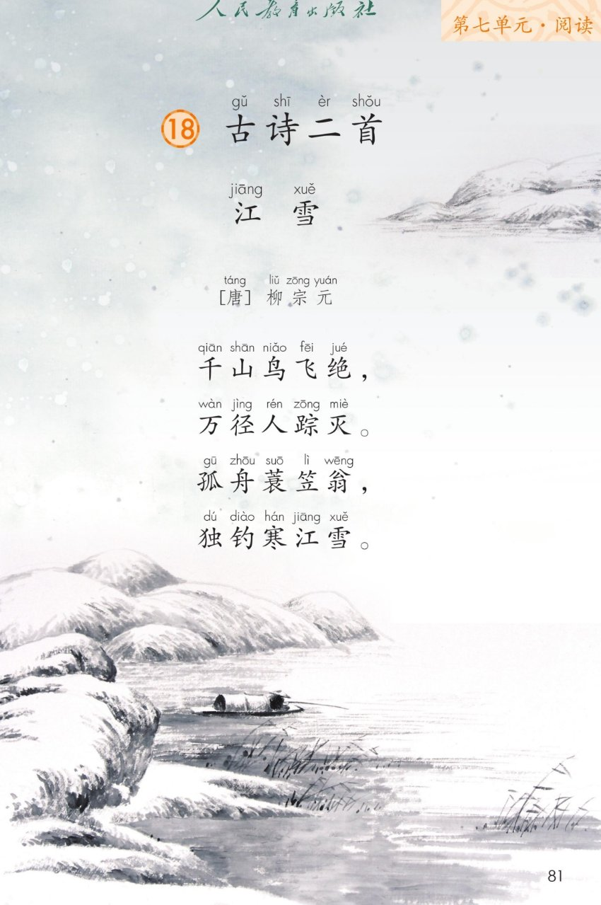
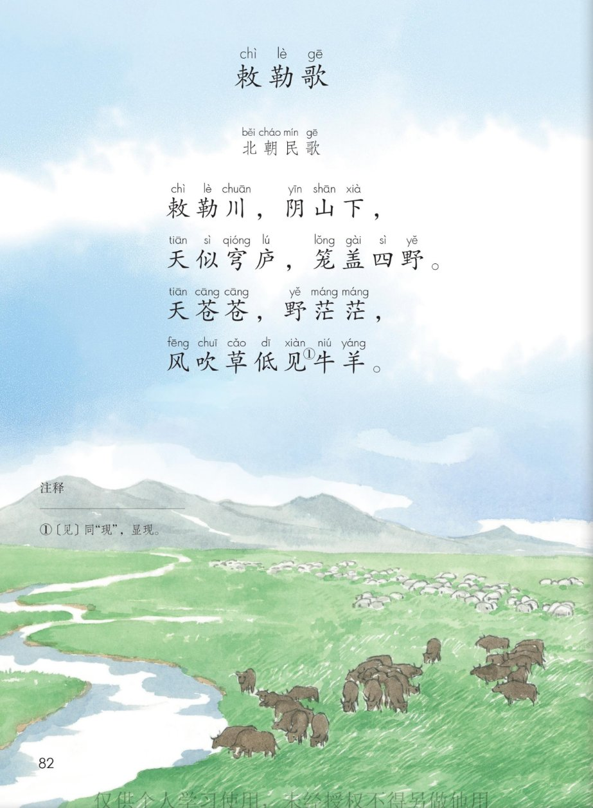
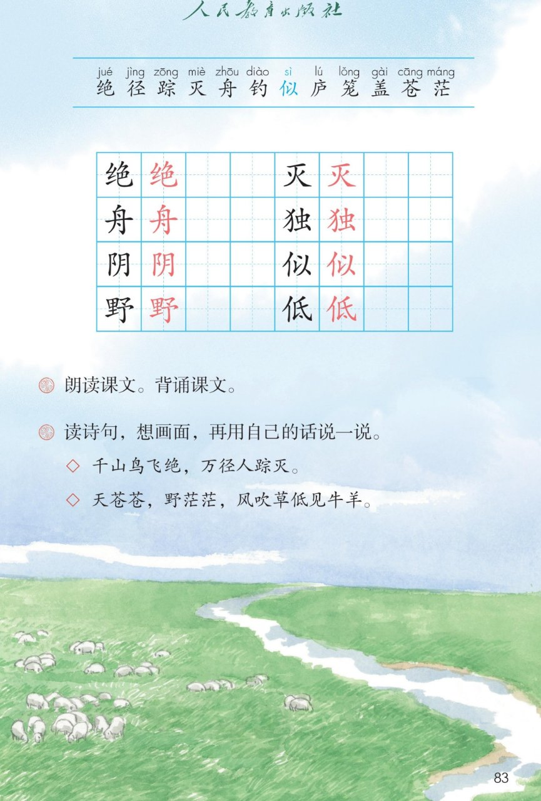

×
🔊 手机听不到声音怎么办？照这 3 步做
① 用
Edge 浏览器 打开
www.jeepsh.cn （在微信里打开的点右上角「⋯ → 在浏览器打开」；没装 Edge 就到应用商店搜「Edge」安装）。
② 应用商店搜
「讯飞语记」 安装 → 打开它 →
通用设置 → 语音合成设置 → 打开
「合成系统接口」 和
「全局生效」 两个开关 → 再选一个
中文发音人 。
③ 系统语言设为
简体中文 ，点「
播放 」试听能说中文后，
彻底关闭浏览器再重开 （后台划掉），回到课件点读就有声音。
→ 打开声音自检
❄️ 第 18 课《古诗二首》· 有声图文带读
统编版语文 · 第七单元·阅读 · 课本 第 81~83 页 · 作者：唐 柳宗元 · 北朝民歌
古诗 2 首 · 共 8 句
会认字 12
会写字 8
听写词 10
近义词 4 组
深入理解 8 题
本课本领 朗读·背诵
🎧 五步学（可随时点任意一句、一个字、一个词单独听）： ① 听读课文 ——一句一句读，读到哪一句哪一句发光；开「跟读」后读完一句留时间让你自己读。② 学字词 ——12 个会认字、8 个会写字（含书写提示），点一个读一个。③ 诗句里的词·听写·造句 ——先弄清绝、径、穹庐、见的意思，再听写 10 个词（读两遍→你写→报答案→听示范句），最后听 4 组近义词辨析。④ 深入理解 ——8 道题（认知 / 理解 / 运用 / 拓展），开放题答案不唯一，先想后看。⑤ 背诵闯关·分角色 ——按五步把两首背下来，再让柳宗元和草原上的牧民各读一首。
点诗前的 ①② 听整首
🔁 跟读模式：关
👁 隐藏注音（自测用）
注音只标本课要认、要写的字，读音来自课本第 83 页生字表
🎤 朗读要求（老师标准） 绝、径、踪、似、见 （“见”这里读 xiàn，同“现”）；古诗的节奏 ：千山／鸟飞／绝；敕勒川，阴山下（三个字一顿）；慢一点、轻一点 ，像站在雪地里静静地看着；韵脚读清楚 ：《江雪》绝、灭、雪；《敕勒歌》下、野、茫、羊；又轻又静 ；《敕勒歌》最后一句读得辽阔 ，往上扬。
① 江jiāng 雪xuě [唐] 柳宗元 千山鸟飞绝jué ， 万径jìng 人踪zōng 灭miè 。 孤舟zhōu 蓑笠翁， 独dú 钓diào 寒江雪。
② 敕chì 勒lè 歌gē 北朝民歌 敕chì 勒lè 川，阴yīn 山下，天似sì 穹庐lú ，笼lǒng 盖gài 四野yě 。 天苍cāng 苍cāng ，野yě 茫茫máng ， 风吹草低dī 见xiàn 牛羊。
🤔 想一想（点我可跳过）
点一张图，听读整页

第 81 页 · 《江雪》全诗与雪景插图

第 82 页 · 《敕勒歌》全诗与草原插图

第 83 页 · 生字表与课后题
📖 人教版《语文》二年级上册 · 课本第 81~83 页 · 图片仅供个人学习，版权归人民教育出版社所有
点一个字，听读音、词语和课文里的句子
结构、部首、笔画与书写提示为通用规范，供参考，以教材和老师的指导为准
绝
jué
绝句 · 鸟飞绝
9 画 · 左右（纟）
左窄右宽，右边色上小下大
舟
zhōu
孤舟 · 小舟
6 画 · 独体
笔顺先撇后横，中间横长
阴
yīn
阴山 · 阴天
6 画 · 左右（阝）
左窄右宽，右耳竖直
野
yě
四野 · 野茫茫
11 画 · 左右（里）
左里右予，竖钩要长
灭
miè
人踪灭 · 灭火
5 画 · 独体
上横短，火的撇捺舒展
独
dú
独钓 · 独自
9 画 · 左右（犭）
反犬旁窄，虫字要正
似
sì
天似穹庐 · 好似
6 画 · 左右（亻）
左窄右宽，竖提要有力
低
dī
草低 · 低头
7 画 · 左右（亻）
左窄右宽，斜钩要拉长
点一行，听这个字的意思和诗句
绝 鸟飞绝 人踪灭
径 小径 万径
庐 穹庐 草庐
见 见牛羊（同“现”）
读两遍 → 你在纸上写 → 报答案 → 听示范句
准备听写 · 共 10 个词
○ ○ ○
点下面的「开始听写」，听到一个词就写一个词。
▶ 开始听写
🔁 再读一遍
👁 看答案
点词听读，点句子听示范句，再自己说一句
1 绝句 会写字 · 古诗
示范句：《江雪》是一首绝句。
✏️ 我也能说：什么 + 是一首绝句
2 孤舟 诗中的词
示范句：江面上漂着一只孤舟。
✏️ 我也能说：哪里 + 有一只孤舟
3 阴山 诗中的词
示范句：敕勒川就在阴山下。
✏️ 我也能说：哪里 + 在阴山下
4 四野 会写字
示范句：大雪盖住了四野。
✏️ 我也能说：什么 + 盖住了四野
5 灭火 会写字
示范句：消防员叔叔正在灭火。
✏️ 我也能说：谁 + 在灭火
6 独钓 诗中的词
示范句：老翁独钓寒江雪。
✏️ 我也能说：谁 + 独钓 + 什么
7 好似 会写字
示范句：天好似一个大帐篷。
✏️ 我也能说：什么 + 好似 + 什么
8 低头 会写字
示范句：他低头认真地写字。
✏️ 我也能说：谁 + 低头 + 做什么
9 苍茫 会认字
示范句：草原苍茫，一眼看不到边。
✏️ 我也能说：哪里 + 苍茫
10 穹庐 诗中的词
示范句：天似穹庐，笼盖四野。
✏️ 我也能说：什么 + 似穹庐
相同点 / 不一样在哪 / 各造一句
似 — 像
相同：都表示好像 。
不一样：似 多用在诗里、书面语里，读起来短；像 是口语，平时说话常用。课文里说：天似穹庐。
似：天似穹庐，笼盖四野。
绝 — 尽
相同：都有没有了、到尽头 的意思。
不一样：绝 是断得干干净净，一点也没有；尽 是慢慢用完、走到头。课文里说：千山鸟飞绝。
绝：千山鸟飞绝。
孤 — 独
相同：都表示只有一个 。
不一样：孤 常写孤单的一只船、一个人；独 常写一个人自己做什么。课文里正好对上了：孤舟、独钓。
孤：孤舟蓑笠翁。
苍茫 — 辽阔
相同：都表示很大、看不到边 。
不一样：苍茫 写空旷又有点看不清，常写草原、大雪、暮色；辽阔 只写面积大，常写天空、大海、草原。课文里说：野茫茫。
苍茫：草原苍茫，一眼看不到边。
写雪写冷 寒江 白雪 冰天雪地 天寒地冻
山野的词 千山 万径 四野 草原
叠词 苍苍 茫茫 白茫茫 绿油油
数量词 千山 万径 一座山 一条江 一群牛羊
标「答案不唯一」的题，说得有道理都对
认知 《江雪》里，山上还有鸟在飞吗？小路上还有人走过的脚印吗？看解析
🤔 想一想
解析：
鸟 没有了：“千山鸟飞绝”的“绝”就是断绝、一只也没有。
脚印 也没有了：“万径人踪灭”的“灭”就是消失、看不见了。
两句合起来：天底下白茫茫、静悄悄，什么活动的东西都看不见。
认知 《敕勒歌》里，“天似穹庐”是把天比成了什么？“见牛羊”的“见”是什么意思？看解析
🤔 想一想
解析：
把天 比成穹庐 ：穹庐就是草原上圆顶的大帐篷，天像一口大帐篷扣在头顶上。
“见”读 xiàn，同“现”，是露出来 的意思——风把草吹低了，牛羊就露出来了。
课本第 82 页下面有一条注释，说的就是这个“见”。
理解 《江雪》前两句写“千山”“万径”都看不见鸟和人，这样写是为了写出什么？看解析
🤔 想一想
解析：
写出雪大、天冷 ：鸟都躲起来了，人也不出门了。
写出非常安静 ：静得好像能听见雪落下来的声音。
还写出空旷 ：千山、万径那么大，却空无一人——这样后面那只小船、那个老翁才显得特别孤单。
理解 这么冷的天，老翁为什么还要一个人坐在小船上钓鱼？看解析
🤔 想一想
解析：
他不怕冷 ：穿着蓑衣、戴着斗笠，稳稳地坐着。
他喜欢安静 ：别人都不出门，他偏要在这片安静里待着。
他心里很坚定 ：一个人也不慌，安安静静做自己的事。
🌈 答案不唯一，说出“不怕冷 / 喜欢安静 / 心里坚定”中的一条，讲清理由就行
理解 《敕勒歌》先写天，再写原野，最后才写草里的牛羊。这样写让我们看到了什么？看解析
🤔 想一想
解析：
先远后近 ：天在最远处，草原在中间，牛羊在眼前。
先大后小 ：天和野大得看不到边，牛羊小小的一群一群。
最后才见牛羊 ：风一吹草低了才看见，像忽然发现了一个惊喜。
运用 用自己的话说说“千山鸟飞绝，万径人踪灭”是什么样子。看解析
🤔 想一想
解析：
先说看见了什么 ：雪山、小路、白雪。
再说没有什么 ：没有鸟飞，没有脚印。
最后说感觉 ：又白又静，冷得厉害。
🌈 答案不唯一，说清“看到什么 + 没有什么 + 什么感觉”就是完整的一段话
运用 用自己的话说说“天苍苍，野茫茫，风吹草低见牛羊”是什么样子。看解析
🤔 想一想
解析：
先说天 ：又高又远，蓝得发青。
再说野 ：绿得看不到边。
最后说风、草、牛羊 ：风一吹，草一低，牛羊就露出来了。
🌈 答案不唯一，按“天—野—风—牛羊”的顺序说下来就很好
拓展 《江雪》和《敕勒歌》，你更喜欢哪一首？说说你的理由。看解析
🤔 想一想
解析：
喜欢《江雪》 ：雪景又白又静，老翁一个人钓鱼，很了不起。
喜欢《敕勒歌》 ：天苍苍、野茫茫，风吹草低见牛羊，草原太美了。
两首我都喜欢：一首静 ，一首阔 。
🌈 答案不唯一，说清“喜欢哪一首 + 为什么”就是完整的一段话
点一步，听这一步
3
《敕勒歌》头两句
4
《敕勒歌》后两句
💬 背诵支架：先 大声读三遍 → 再 看着每句的头两个字背 → 接着 合上书一句一句往下接 → 最后 两首连起来背给同桌听。
点一个角色，听他读的那几句
🎋 柳宗元（写雪）
“千山鸟飞绝，万径人踪灭。”
💬 读得轻、静 ，像站在雪地里往远处看
🎋 柳宗元（独钓）
“孤舟蓑笠翁，独钓寒江雪。”
💬 “孤舟”“独钓”读得稳 ，读出不怕冷的劲
🐎 牧民（远望）
“敕勒川，阴山下，天似穹庐，笼盖四野。”
💬 声音放开 ，“天似穹庐”读得圆、读得大
🐎 牧民（赞叹）
“天苍苍，野茫茫，风吹草低见牛羊。”
💬 “苍苍”“茫茫”读得慢 ，“见牛羊”往上扬
👥 全班齐读
“千山鸟飞绝……” “天苍苍，野茫茫……”
💬 两首连起来齐背，整齐、响亮